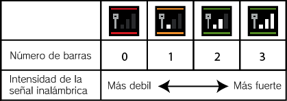

|
11
|
Cómo conectarte a una DS
|
 |
|
Debes cumplir los siguientes requisitos para depositar y sacar Pokémon de un juego Pokémon Diamond o Pokémon Pearl para la consola Nintendo DS. Condiciones necesarias
Necesitas tener un Pokédex y una Poké Ball en Pokémon Diamond
o Pokémon Pearl.Lo
que necesitas
Una consola
Nintendo DS o Nintendo DS Lite
Una tarjeta DS de Pokémon
Diamond o Pokémon Pearl
* Solo puedes usar la versión en inglés de la tarjeta DS de Pokémon Diamond o Pokémon Pearl. Si estás preparado para conectarte,
consulta
Notas
sobre el juego inalámbrico
Presta atención a los siguientes puntos del juego inalámbrico. Un icono en la consola Nintendo DS o
debajo del menú representa una Conexión Wi-Fi de Nintendo.
Durante un juego inalámbrico, aparecerá un icono en la pantalla superior o en la pantalla inferior indicando la fuerza de la señal inalámbrica. El icono posee cuatro modos, dependiendo de la fuerza de la señal, como se indica a continuación.  Nota: Sabrás que la consola DS se encuentra en el modo inalámbrico cuando la luz del indicador de encendido parpadee rápidamente (verde o rojo). Directrices importantes sobre las
comunicaciones inalámbricas:
|

 |
 |
 |